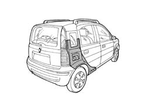
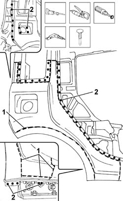
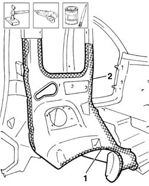
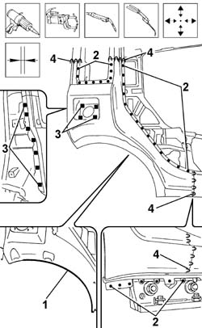

7210E52 R.R. REAR WING
- Path
- Procedures > 72 PANELS AND FRAME > 7210 REMOVING REFITTING > 7210E EXTERNAL PARTS > 7210E52 R.R. REAR WING
- Kind
- repair procedure (removal / refitting; the operation number is the code)
- Applies to
- all engines; all production periods
- Interactive page
- https://sloeber94.github.io/elrnDB-fPnd/en/#/2753362
Applies to: all engines; all production periods
 Removing
Removing
 Refitting
RefittingCheck if any of the connected parts are deformed by checking body alignment dimensions. Use appropriate measurement tools (reference rigs, templates or gauges).
Straighten the body if necessary.

Applies to: all engines; all production periods
1. Use a hacksawing machine to follow the cutting lines shown in the figure.
Remove the cut parts.
Use a rotary brush to remove paint to gain access to the weld spots.
2. Use a chamfering machine to remove the weld spots shown in the figure.
Drill out any weld spots not accessible to the chamfering machine.
Use a chisel and mallet to remove spots drilled previously.
Trim the cut edges from the car.

Applies to: all engines; all production periods
Straighten the car edges using a mallet and profiled stake.
Use a grinding wheel to remove the spot weld residues.
1. Remove the residues of sealant from the wheel arch.
Use a rotary brush to clean treated areas.
2. Apply the electroweldable paint finish.

Applies to: all engines; all production periods
Refitting
RemovingUse a grinding wheel to remove the corrosion-proofing from around the inner and outer edge of the parts.
Apply electric weld paint finish to the edges to be welded.
Fit the part correctly on the car using self-locking grippers.
Check the alignment and ensure the surrounding gaps are even.
1. Apply sealant to the area shown.
2. Use a spot welder to weld the areas shown in the figure.
3. Using a MIG welder, fill weld in the areas shown in the diagram.
4. Using a MIG welder, seam weld in the areas shown in the diagram.

Applies to: all engines; all production periods
Correct any deformations in the panel using a profiled stake and mallet.
Use a grinding wheel to level the welds
Use a rotary brush to clean the newly-welded areas.
Apply rust-proofing to newly-welded areas.
Seal the joint lines between the part and the car.